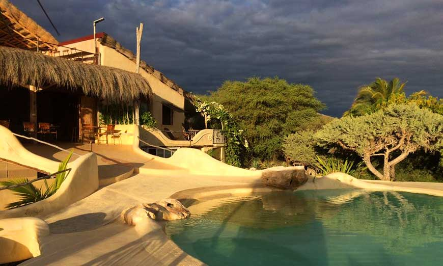
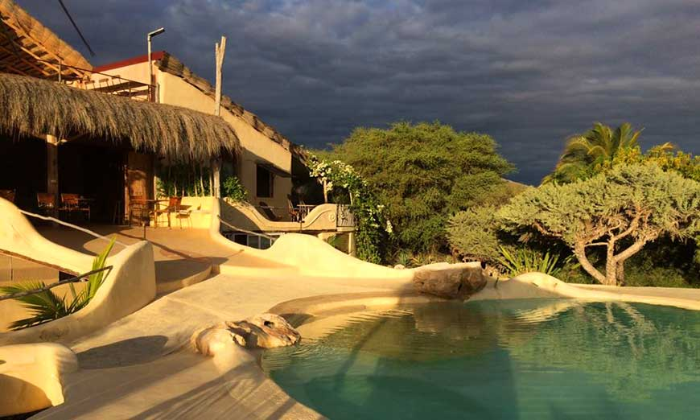

Ile Sainte Marie
L'île Sainte-Marie, autrefois nommée Nosy-Ibrahim et devenue aujourd'hui en malgache Nosy Boraha,
est une île située au nord-est de Fenoarivo Atsinanana (région d'Analanjirofo) en face de Soanierana Ivongo dont elle est séparée
par un chenal de 30 km (16 miles) de large. Destination touristique, l'île Sainte-Marie est connue pour son caractère authentique et préservé
, ses regroupements de baleines à bosse, ses plages paradisiaques, son histoire romanesque et l'accueil de ses habitants.

Nosy Be
Nosy Be (en malgache : « Nosy : île » et « Be : grand ») est une île côtière de Madagascar située dans le Canal du Mozambique
, près des côtes nord-ouest de Madagascar. L'île est aussi appelée Ambariobe (« La Grande île » en dialecte local) par les habitants de la région.
Il s'agit, avec Diego Suarez et l'Île Sainte-Marie, d'un des trois anciens établissements français qui furent associés à l'ancien territoire du royaume
Merina pour former l'ancien protectorat français de Madagascar dont l'actuelle République de Madagascar reprend les frontières.
Tuléar
Toliara, appelée Tuléar en français, est la plus grande ville du Sud de Madagascar. C'est le chef-lieu de la région
Atsimo-Andrefana (Sud-Ouest) après avoir été celui de la province de Toliara. Ce port est situé à 540 km de Fianarantsoa et à 951 km de la capitale,
Antananarivo, par la route nationale 71. La population de son aire urbaine était estimée en 2014 à plus de 250 000 habitants. Elles s'étend au bord
du canal de Mozambique et à proximité du tropique du Capricorne,
Majunga
Mahajanga (ou Majunga en nom francisé et Massali au xviiie siècle) est une ville portuaire de la côte nord-ouest de Madagascar,
capitale de la province de Mahajanga et chef-lieu de la région Boeny. Elle se trouve à l'embouchure du fleuve Betsiboka, sur le canal du Mozambique
, à 550 km au nord-ouest d'Antananarivo. Son aire urbaine est estimée à 244 279 habitants en 2014.
Morondava
Morondava est la capitale économique et administrative du Menabe, une région de Madagascar, dans la province de Tuléar. Morondava est située à l'ouest du pays, sur le delta de la rivière du même nom au bord du canal de Mozambique. Elle se situe sur la Route Nationale No; 35 à 456 km d'Ivato (Ambositra) et à environ 640 km de Tananarive, la capitale de Madagascar.
 

.jpg)
.jpg)